Topological Sort Algorithm | DFS: G-21
Problem Statement: Given a Directed Acyclic Graph (DAG) with V vertices labeled from 0 to V-1.The graph is represented using an adjacency list where adj[i] lists all nodes connected to node. Find any Topological Sorting of that Graph.
In topological sorting, node u will always appear before node v if there is a directed edge from node u towards node v(u -> v).
The Output will be True if your topological sort is correct otherwise it will be False.
Examples
Input: V = 6, adj = [[], [], [3], [1], [0, 1], [0, 2]] Output: [5, 4, 2, 3, 1, 0] Explanation: A graph may have multiple topological sortings. The result is one of them. The necessary conditions for the ordering are: According to edge 5 -> 0, node 5 must appear before node 0 in the ordering. According to edge 4 -> 0, node 4 must appear before node 0 in the ordering. According to edge 5 -> 2, node 5 must appear before node 2 in the ordering. According to edge 2 -> 3, node 2 must appear before node 3 in the ordering. According to edge 3 -> 1, node 3 must appear before node 1 in the ordering. According to edge 4 -> 1, node 4 must appear before node 1 in the ordering. The above result satisfies all the necessary conditions. [4, 5, 2, 3, 1, 0] is also one such topological sorting that satisfies all the conditions.
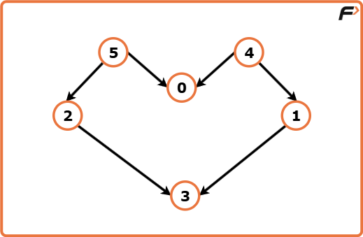
Input: V = 4, adj = [[], [0], [0], [0]] Output: [3, 2, 1, 0] Explanation: The necessary conditions for the ordering are: For edge 1 -> 0, node 1 must appear before node 0. For edge 2 -> 0, node 2 must appear before node 0. For edge 3 -> 0, node 3 must appear before node 0.
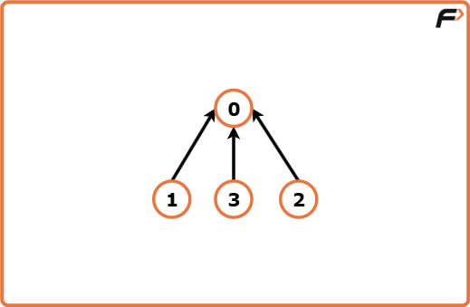
Disclaimer: Here is the practice link to help you assess your knowledge better. It's highly recommend trying to solve it before looking at the solution.
Using DFS (Depth first Search)
Algorithm
- Initialize a visited array to mark whether each vertex has been visited.
- Create a stack to store vertices in their finishing order.
- For each vertex, if it has not been visited, perform a DFS starting from it.
- In DFS, mark the current vertex as visited.
- For each neighbor of the current vertex, if unvisited, recursively call DFS on it.
- After exploring all neighbors, push the current vertex onto the stack.
- After DFS finishes for all vertices, pop all elements from the stack to get the topological ordering.
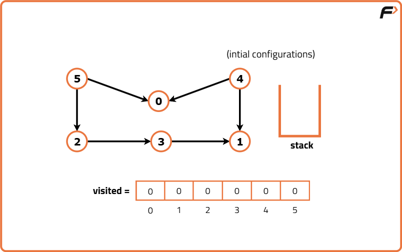
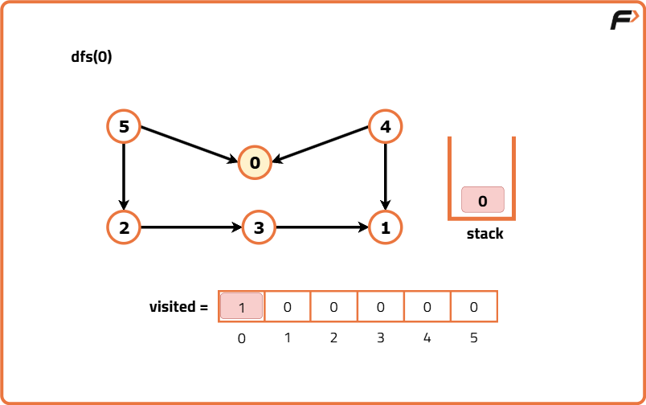
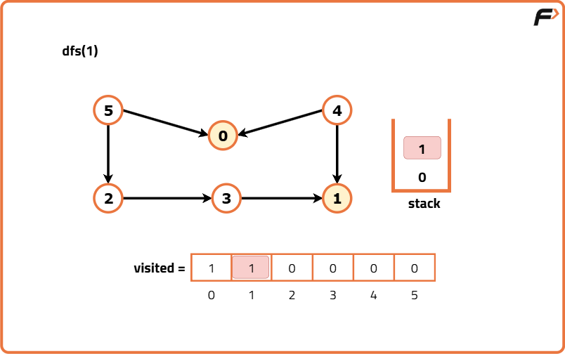
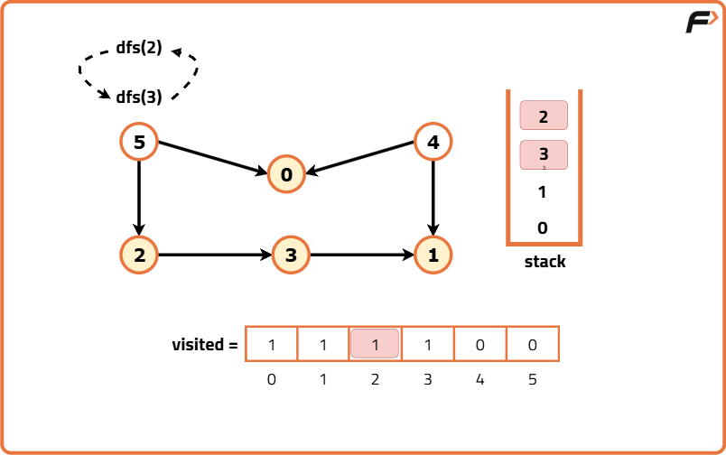
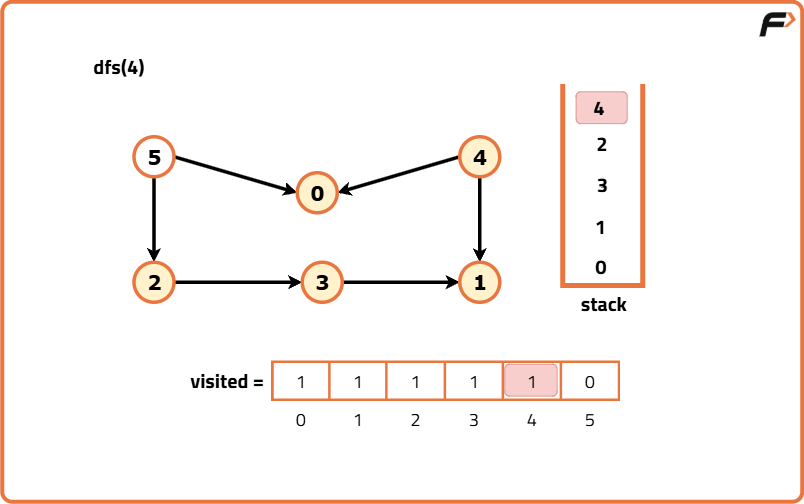
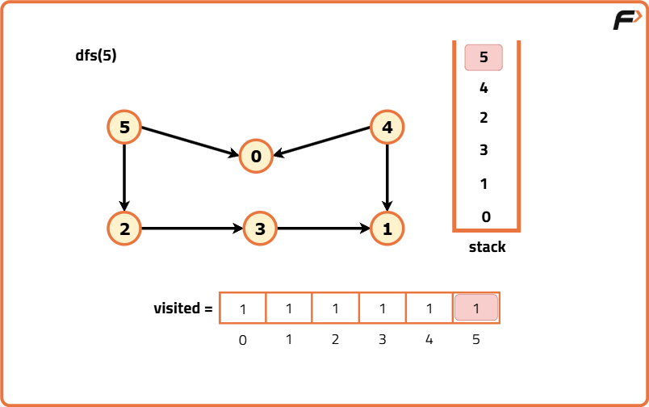
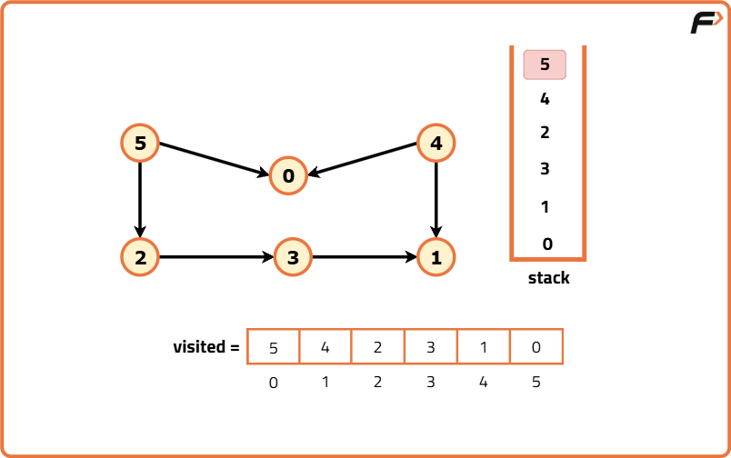
Code
#include <bits/stdc++.h>
using namespace std;
// Class containing the solution logic
class Solution {
public:
// Function to perform DFS
void dfs(int node, vector<int> adj[], vector<int>& vis, stack<int>& st) {
// Mark the current node as visited
vis[node] = 1;
// Explore all neighbors of this node
for (auto it : adj[node]) {
// If the neighbor is not visited, recursively perform DFS
if (!vis[it]) {
dfs(it, adj, vis, st);
}
}
// After visiting all neighbors, push this node into the stack
st.push(node);
}
// Function to perform Topological Sort
vector<int> topoSort(int V, vector<int> adj[]) {
// Create a visited array to mark visited vertices
vector<int> vis(V, 0);
// Stack to store vertices in finishing order
stack<int> st;
// Perform DFS from each unvisited vertex
for (int i = 0; i < V; i++) {
if (!vis[i]) {
dfs(i, adj, vis, st);
}
}
// Prepare the result array
vector<int> ans;
while (!st.empty()) {
ans.push_back(st.top());
st.pop();
}
// Return the topological ordering
return ans;
}
};
// Driver code
int main() {
// Number of vertices and edges
int V = 6, E = 6;
// Adjacency list representation of the graph
vector<int> adj[V];
adj[5].push_back(0);
adj[5].push_back(2);
adj[4].push_back(0);
adj[4].push_back(1);
adj[2].push_back(3);
adj[3].push_back(1);
// Create an object of Solution
Solution obj;
// Get the topological order
vector<int> res = obj.topoSort(V, adj);
// Print the result
cout << "Topological Sort: ";
for (auto it : res) {
cout << it << " ";
}
cout << endl;
return 0;
}
Complexity Analysis
Time Complexity: O(V + E),This is because in a topological sort using DFS, each vertex is visited exactly once, and each directed edge is explored exactly once during the DFS traversal. The cost of visiting all vertices is O(V) and the cost of exploring all edges is O(E). Since both happen sequentially and not nested, the total time complexity is O(V + E). For example, if V = 6 and E = 6, the DFS will make exactly 6 vertex visits and 6 edge explorations, leading to a total of O(6 + 6) = O(12), which simplifies to O(V + E).
Space Complexity: O(V + E),The space complexity comes from three parts: the adjacency list (which stores all vertices and edges, taking O(V + E) space), the visited array (O(V) space), and the recursion stack (O(V) in the worst case for a DFS if the graph is like a chain). The stack used to store the topological order will also take O(V) space. Therefore, the dominant space usage is O(V + E). For example, if V = 6 and E = 6, the adjacency list will store all 6 vertices and 6 edges (O(12) space), the visited array takes O(6), and the recursion stack may take up to O(6) in the worst case, keeping the total within O(V + E).
Using BFS ( Breadth First Search )
Algorithm
Instead of relying on DFS and recursion, this method works by keeping track of the in-degree of each vertex, which represents the number of incoming edges to that vertex. Any vertex with an in-degree of zero has no prerequisites and can therefore safely appear first in the topological order.
- Initialize an array to store the in-degree of each vertex as zero.
- Build the adjacency list for the graph.
- For each directed edge, increment the in-degree of the destination vertex.
- Create a queue and enqueue all vertices with in-degree zero.
- Initialize an empty list to store the topological order.
- While the queue is not empty:
- Remove the front vertex from the queue and add it to the order list.
- For each neighbor of this vertex, reduce its in-degree by one.
- If a neighbor’s in-degree becomes zero, enqueue it.
- Return the order list as the topological sort.
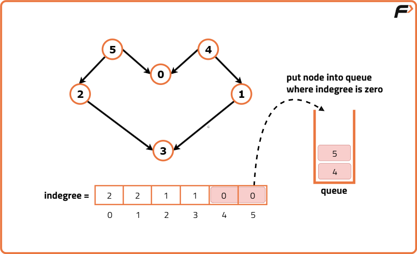
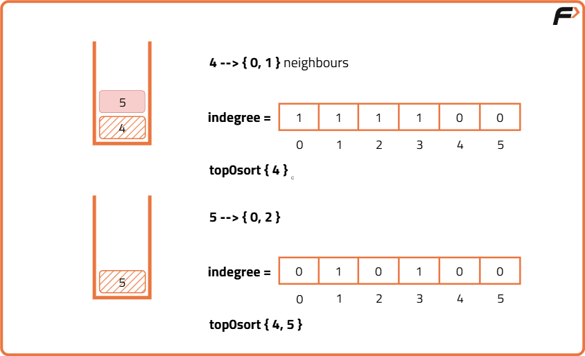
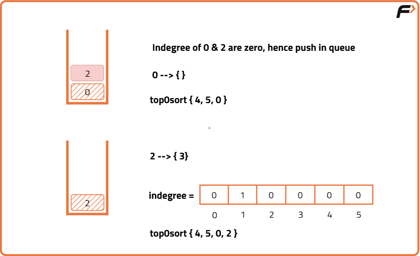
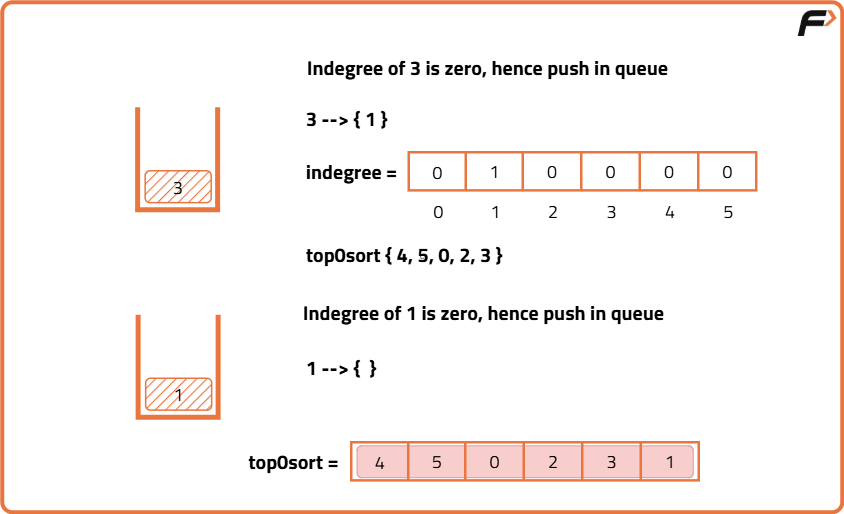
Code
#include <bits/stdc++.h>
using namespace std;
// Creating a class named Solution
class Solution {
public:
// Function to perform BFS-based Topological Sort
vector<int> topologicalSort(int V, vector<int> adj[]) {
// Create a vector to store the in-degree of each vertex
vector<int> indegree(V, 0);
// Loop through all vertices to calculate in-degree
for (int i = 0; i < V; i++) {
// Traverse all adjacent vertices of the current vertex
for (auto it : adj[i]) {
// Increase in-degree of the connected vertex
indegree[it]++;
}
}
// Create a queue to store vertices with in-degree zero
queue<int> q;
// Loop through all vertices
for (int i = 0; i < V; i++) {
// If in-degree is zero, add to queue
if (indegree[i] == 0) {
q.push(i);
}
}
// Vector to store the topological order
vector<int> topo;
// Process until queue is empty
while (!q.empty()) {
// Get the front vertex from the queue
int node = q.front();
q.pop();
// Add it to the topological order
topo.push_back(node);
// Reduce in-degree of its adjacent vertices
for (auto it : adj[node]) {
indegree[it]--;
// If in-degree becomes zero, push it into queue
if (indegree[it] == 0) {
q.push(it);
}
}
}
// Return the topological ordering
return topo;
}
};
// Driver code
int main() {
// Number of vertices and edges
int V = 6, E = 6;
// Creating adjacency list
vector<int> adj[V];
// Adding edges
adj[5].push_back(0);
adj[5].push_back(2);
adj[4].push_back(0);
adj[4].push_back(1);
adj[2].push_back(3);
adj[3].push_back(1);
// Creating Solution object
Solution obj;
// Getting the topological sort result
vector<int> ans = obj.topologicalSort(V, adj);
// Printing the result
for (auto it : ans) {
cout << it << " ";
}
cout << endl;
return 0;
}
Complexity Analysis
Time Complexity: O(V + E) because we visit each vertex exactly once and process all outgoing edges from each vertex exactly once. The in-degree calculation takes O(E), and each vertex is enqueued and dequeued exactly once in O(V). Thus, total time is linear in the sum of vertices and edges.
Space Complexity: O(V + E) because we store the adjacency list which takes O(E) space, the in-degree array which takes O(V), the queue which can store up to O(V) vertices at a time, and the topological order array which takes O(V). Overall, the space requirement is proportional to the size of the graph.